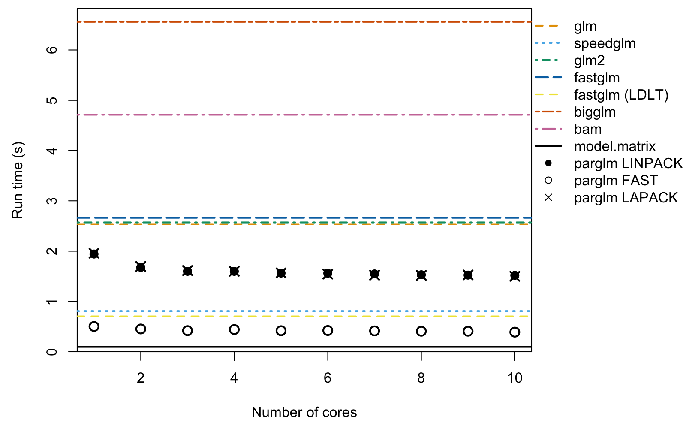
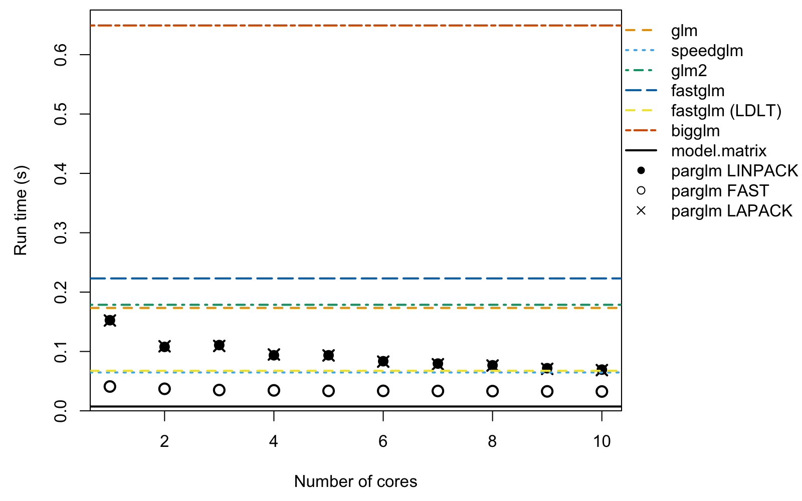
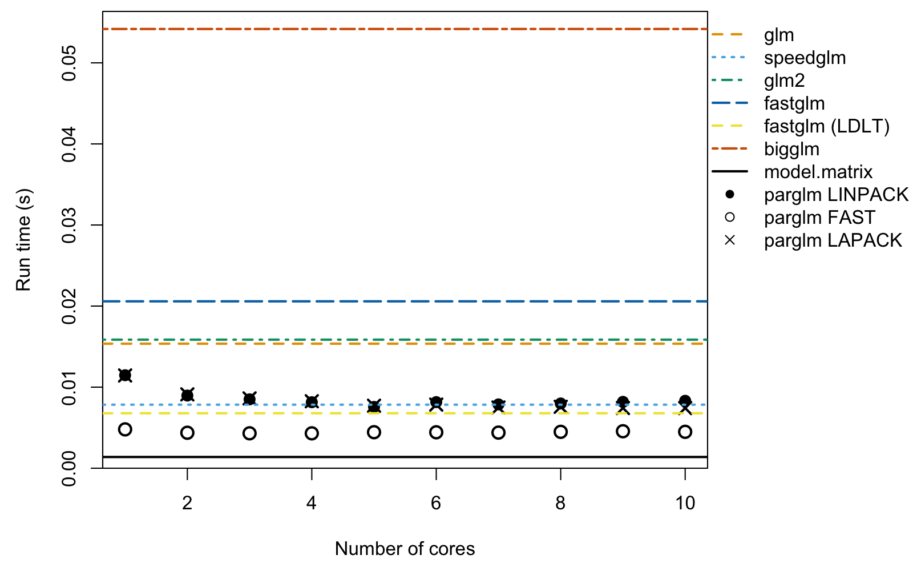
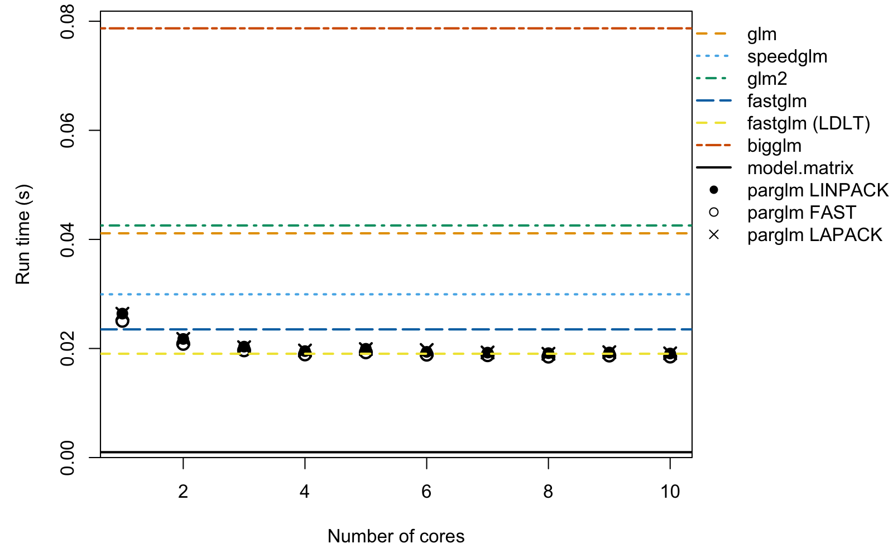
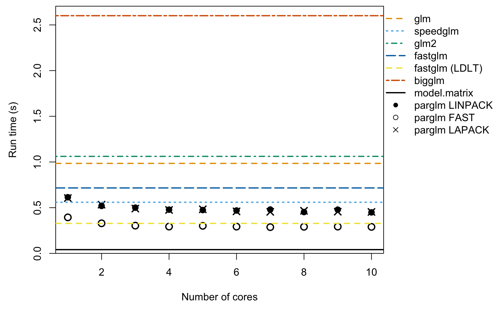

Introduction to the parglm package
Benjamin Christoffersen and Tom Palmer
2026-11-25
Source:vignettes/parglm.Rmd
parglm.RmdThe motivation for the parglm package is a parallel
version of the glm function. It solves the iteratively
re-weighted least squares using a QR decomposition with column pivoting
with the DGEQP3 function from LAPACK. The computation is
done in parallel as in the bam function in the
mgcv package. The cost is an additional \(O(Mp^2 + p^3)\) where \(p\) is the number of coefficients and \(M\) is the number of chunks to be computed
in parallel. The advantage is that you do not need to compile the
package with an optimized BLAS or LAPACK which supports multithreading.
The package also includes a method that computes the Fisher information
and then solves the normal equation as in the speedglm
package. This is faster but less numerically stable.
Example of computation time
Below, we estimate a logistic regression with 1000000 observations
and 50 covariates. We vary the number of cores being used with the
nthreads argument to parglm.control. The
method argument sets which method is used.
LINPACK uses the same pivoted QR (dqrdc2) as
glm.fit for the final decomposition; LAPACK
uses DGEQP3 from LAPACK throughout; and FAST
solves the normal equations from the Fisher information, similar to the
speedglm package.
#####
# simulate
n # number of observations
#> [1] 1000000
p # number of covariates
#> [1] 50
set.seed(68024947)
X <- matrix(rnorm(n * p, 1/p, 1/sqrt(p)), n, ncol = p)
df <- data.frame(y = 1/(1 + exp(-(rowSums(X) - 1))) > runif(n), X)
#####
# compute and measure time. Setup call to make
library(microbenchmark)
library(speedglm)
library(fastglm)
library(glm2)
library(biglm)
library(mgcv)
library(parglm)
X_mat <- model.matrix(y ~ ., df)
biglm_form <- reformulate(names(df)[-1], response = "y")
bam_form <- biglm_form
cl <- list(
quote(microbenchmark),
glm = quote(glm (y ~ ., binomial(), df)),
speedglm = quote(speedglm(y ~ ., family = binomial(), data = df)),
glm2 = quote(glm2 (y ~ ., binomial(), df)),
fastglm = quote(fastglm (X_mat, as.numeric(df$y), family = binomial())),
fastglm3 = quote(fastglm (X_mat, as.numeric(df$y), family = binomial(), method = 3L)),
bigglm = quote(bigglm (biglm_form, df, family = binomial())),
bam = quote(bam (bam_form, family = binomial(), data = df)),
times = 11L)
tfunc <- function(method = "LINPACK", nthreads)
parglm(y ~ ., binomial(), df, control = parglm.control(method = method,
nthreads = nthreads))
cl <- c(
cl, lapply(1:n_threads, function(i) bquote(tfunc(nthreads = .(i)))))
names(cl)[10:(10L + n_threads - 1L)] <- paste0("parglm-LINPACK-", 1:n_threads)
cl <- c(
cl, lapply(1:n_threads, function(i) bquote(tfunc(
nthreads = .(i), method = "FAST"))))
names(cl)[(10L + n_threads):(10L + 2L * n_threads - 1L)] <-
paste0("parglm-FAST-", 1:n_threads)
cl <- c(
cl, lapply(1:n_threads, function(i) bquote(tfunc(
nthreads = .(i), method = "LAPACK"))))
names(cl)[(10L + 2L * n_threads):(10L + 3L * n_threads - 1L)] <-
paste0("parglm-LAPACK-", 1:n_threads)
cl <- as.call(cl)
cl # the call we make
#> microbenchmark(glm = glm(y ~ ., binomial(), df), speedglm = speedglm(y ~
#> ., family = binomial(), data = df), glm2 = glm2(y ~ ., binomial(),
#> df), fastglm = fastglm(X_mat, as.numeric(df$y), family = binomial()),
#> fastglm3 = fastglm(X_mat, as.numeric(df$y), family = binomial(),
#> method = 3L), bigglm = bigglm(biglm_form, df, family = binomial()),
#> bam = bam(bam_form, family = binomial(), data = df), times = 11L,
#> `parglm-LINPACK-1` = tfunc(nthreads = 1L), `parglm-LINPACK-2` = tfunc(nthreads = 2L),
#> `parglm-LINPACK-3` = tfunc(nthreads = 3L), `parglm-LINPACK-4` = tfunc(nthreads = 4L),
#> `parglm-LINPACK-5` = tfunc(nthreads = 5L), `parglm-LINPACK-6` = tfunc(nthreads = 6L),
#> `parglm-LINPACK-7` = tfunc(nthreads = 7L), `parglm-LINPACK-8` = tfunc(nthreads = 8L),
#> `parglm-LINPACK-9` = tfunc(nthreads = 9L), `parglm-LINPACK-10` = tfunc(nthreads = 10L),
#> `parglm-FAST-1` = tfunc(nthreads = 1L, method = "FAST"),
#> `parglm-FAST-2` = tfunc(nthreads = 2L, method = "FAST"),
#> `parglm-FAST-3` = tfunc(nthreads = 3L, method = "FAST"),
#> `parglm-FAST-4` = tfunc(nthreads = 4L, method = "FAST"),
#> `parglm-FAST-5` = tfunc(nthreads = 5L, method = "FAST"),
#> `parglm-FAST-6` = tfunc(nthreads = 6L, method = "FAST"),
#> `parglm-FAST-7` = tfunc(nthreads = 7L, method = "FAST"),
#> `parglm-FAST-8` = tfunc(nthreads = 8L, method = "FAST"),
#> `parglm-FAST-9` = tfunc(nthreads = 9L, method = "FAST"),
#> `parglm-FAST-10` = tfunc(nthreads = 10L, method = "FAST"),
#> `parglm-LAPACK-1` = tfunc(nthreads = 1L, method = "LAPACK"),
#> `parglm-LAPACK-2` = tfunc(nthreads = 2L, method = "LAPACK"),
#> `parglm-LAPACK-3` = tfunc(nthreads = 3L, method = "LAPACK"),
#> `parglm-LAPACK-4` = tfunc(nthreads = 4L, method = "LAPACK"),
#> `parglm-LAPACK-5` = tfunc(nthreads = 5L, method = "LAPACK"),
#> `parglm-LAPACK-6` = tfunc(nthreads = 6L, method = "LAPACK"),
#> `parglm-LAPACK-7` = tfunc(nthreads = 7L, method = "LAPACK"),
#> `parglm-LAPACK-8` = tfunc(nthreads = 8L, method = "LAPACK"),
#> `parglm-LAPACK-9` = tfunc(nthreads = 9L, method = "LAPACK"),
#> `parglm-LAPACK-10` = tfunc(nthreads = 10L, method = "LAPACK"))
out <- eval(cl)
#> Warning in microbenchmark(glm = glm(y ~ ., binomial(), df), speedglm =
#> speedglm(y ~ : less accurate nanosecond times to avoid potential integer
#> overflows
s <- summary(out, include_cld = FALSE) # result from `microbenchmark`
print(s[, c("expr", "min", "mean", "median", "max")], digits = 3,
row.names = FALSE)
#> expr min mean median max
#> glm 2463 2535 2537 2602
#> speedglm 774 861 808 1201
#> glm2 2543 2583 2572 2650
#> fastglm 2646 2699 2664 2831
#> fastglm3 681 712 703 806
#> bigglm 6299 6492 6561 6674
#> bam 4480 4729 4713 5419
#> parglm-LINPACK-1 1915 1966 1943 2047
#> parglm-LINPACK-2 1662 1690 1678 1747
#> parglm-LINPACK-3 1559 1597 1599 1625
#> parglm-LINPACK-4 1559 1622 1599 1741
#> parglm-LINPACK-5 1517 1633 1564 1895
#> parglm-LINPACK-6 1513 1569 1562 1672
#> parglm-LINPACK-7 1519 1547 1548 1586
#> parglm-LINPACK-8 1487 1536 1531 1614
#> parglm-LINPACK-9 1482 1558 1524 1816
#> parglm-LINPACK-10 1472 1513 1519 1546
#> parglm-FAST-1 466 502 503 544
#> parglm-FAST-2 422 450 453 471
#> parglm-FAST-3 394 424 419 474
#> parglm-FAST-4 397 448 441 496
#> parglm-FAST-5 398 434 418 580
#> parglm-FAST-6 364 436 422 672
#> parglm-FAST-7 376 432 414 595
#> parglm-FAST-8 383 418 408 481
#> parglm-FAST-9 377 414 408 477
#> parglm-FAST-10 362 408 390 564
#> parglm-LAPACK-1 1896 1970 1960 2052
#> parglm-LAPACK-2 1671 1705 1696 1829
#> parglm-LAPACK-3 1577 1625 1615 1676
#> parglm-LAPACK-4 1551 1596 1600 1641
#> parglm-LAPACK-5 1525 1584 1567 1668
#> parglm-LAPACK-6 1512 1558 1543 1665
#> parglm-LAPACK-7 1482 1530 1522 1619
#> parglm-LAPACK-8 1487 1527 1518 1643
#> parglm-LAPACK-9 1493 1531 1528 1602
#> parglm-LAPACK-10 1477 1511 1499 1562The plot below shows median run times versus the number of cores.
Coloured horizontal lines show the single-threaded reference times for
glm, speedglm, glm2,
fastglm, bigglm, and bam. We
could have used glm.fit and parglm.fit. This
would make the relative difference bigger as both call, e.g.,
model.matrix and model.frame which do take
some time. To show this point, we first compute how much time this takes
and then we make the plot. The black solid line is the computation time
of model.matrix and model.frame.
modmat_time <- microbenchmark(
modmat_time = {
mf <- model.frame(y ~ ., df); model.matrix(terms(mf), mf)
}, times = 10)
modmat_time # time taken by `model.matrix` and `model.frame`
#> Unit: milliseconds
#> expr min lq mean median uq max
#> modmat_time 91.896457 95.318727 127.1149486 98.2355695 122.929521 257.450562
#> neval
#> 10
par(mar = c(4.5, 4.5, .5, 9))
o <- aggregate(time ~ expr, out, median)[, 2] / 10^9
ylim <- range(o, 0); ylim[2] <- ylim[2] + .04 * diff(ylim)
o_linpack <- o[8L:(n_threads + 7L)]
o_fast <- o[(n_threads + 8L):(2L * n_threads + 7L)]
o_lapack <- o[(2L * n_threads + 8L):(3L * n_threads + 7L)]
ref_cols <- c("#E69F00", "#56B4E9", "#009E73", "#0072B2", "#F0E442", "#D55E00", "#CC79A7")
ref_lty <- c("dashed", "dotted", "dotdash", "longdash", "44", "twodash", "1373")
plot(1:n_threads, o_linpack, xlab = "Number of cores", yaxs = "i",
ylim = ylim, ylab = "Run time (s)", pch = 16, cex = 1.4)
points(1:n_threads, o_fast, pch = 1, cex = 1.4, lwd = 2)
points(1:n_threads, o_lapack, pch = 4, cex = 1.4, lwd = 2)
for (i in 1:7)
abline(h = o[i], lty = ref_lty[i], col = ref_cols[i], lwd = 2)
abline(h = median(modmat_time$time) / 10^9, lty = "solid", col = "black",
lwd = 2)
usr <- par("usr")
par(xpd = TRUE)
legend(x = usr[2], y = usr[4], xjust = 0, yjust = 1,
legend = c("glm", "speedglm", "glm2", "fastglm", "fastglm (LDLT)",
"bigglm", "bam", "model.matrix", "parglm LINPACK",
"parglm FAST", "parglm LAPACK"),
lty = c(ref_lty, "solid", NA, NA, NA),
lwd = c(2, 2, 2, 2, 2, 2, 2, 2, NA, NA, NA),
col = c(ref_cols, "black", "black", "black", "black"),
pch = c(NA, NA, NA, NA, NA, NA, NA, NA, 16, 1, 4),
bty = "n")
Plot of runtime versus number of cores.
The open circles are the FAST method and the filled
circles are the LINPACK method. The FAST
method, speedglm, fastglm, and
fastglm (LDLT) all compute the Fisher information and solve
the normal equation; fastglm (LDLT) uses an LDLT Cholesky
decomposition (method 3) rather than the default column-pivoted QR
(method 0). This is an advantage in terms of computation cost but may
lead to unstable solutions. You can alter the number of observations in
each parallel chunk with the block_size argument of
parglm.control.
The single-threaded performance of parglm may be slower
when there are more coefficients. The cause seems to be the difference
between the LAPACK and LINPACK implementation. This is presumably due to
the QR decomposition method and/or the qr.qty method. On
Windows, parglm does seem slower when built with
Rtools and the reason seems to be the qr.qty
method in LAPACK, dormqr, which is slower than the LINPACK
method, dqrsl. Below is an illustration of the computation
times on this machine.
qr1 <- qr(X)
qr2 <- qr(X, LAPACK = TRUE)
qr_times <- microbenchmark::microbenchmark(
`qr LINPACK` = qr(X),
`qr LAPACK` = qr(X, LAPACK = TRUE),
`qr.qty LINPACK` = qr.qty(qr1, df$y),
`qr.qty LAPACK` = qr.qty(qr2, df$y),
times = 11)
print(summary(qr_times, unit = "ms", include_cld = FALSE), # times in ms
row.names = FALSE)
#> expr min lq mean median uq
#> qr LINPACK 447.891667 450.4615880 459.0129766 453.984554 457.5934355
#> qr LAPACK 390.646237 392.2255980 401.8900882 392.586275 401.0841400
#> qr.qty LINPACK 48.409233 50.8594135 103.3221767 54.472641 112.1822115
#> qr.qty LAPACK 111.113567 111.4466920 112.4174937 111.808640 112.8568665
#> max neval
#> 512.239527 11
#> 467.227472 11
#> 389.662688 11
#> 115.964236 11Smaller datasets
For smaller datasets the per-call overhead of parglm’s
thread pool can exceed the gains from parallelism. Below we repeat the
benchmark for n = 100,000 and n = 10,000,
dropping bam since it is aimed at much larger problems.
Note the default block_size of parglm.control
is 10000, so when n = 10,000 the work cannot
be split further across threads and parglm effectively runs
single-threaded regardless of nthreads.
n = 100,000
invisible(run_and_plot(n = 100000L, p = 50L, n_threads = n_threads))
#> expr min mean median max
#> glm 172.2 174.9 173.4 178.9
#> speedglm 64.0 68.7 64.7 99.0
#> glm2 175.7 190.4 178.6 264.8
#> fastglm 220.8 226.2 223.1 259.0
#> fastglm (LDLT) 67.0 67.5 67.4 68.2
#> bigglm 644.0 666.4 649.2 767.7
#> parglm-LINPACK-1 151.4 153.5 152.6 160.5
#> parglm-LINPACK-2 105.6 109.6 107.7 119.5
#> parglm-LINPACK-3 107.2 111.0 110.7 116.9
#> parglm-LINPACK-4 92.5 93.9 93.6 96.5
#> parglm-LINPACK-5 91.6 93.5 93.6 94.8
#> parglm-LINPACK-6 81.9 84.8 83.6 90.5
#> parglm-LINPACK-7 78.4 80.1 79.6 82.8
#> parglm-LINPACK-8 74.8 76.9 76.7 80.3
#> parglm-LINPACK-9 70.9 79.3 71.8 134.7
#> parglm-LINPACK-10 68.1 69.4 69.4 72.9
#> parglm-FAST-1 40.3 43.0 41.0 52.0
#> parglm-FAST-2 36.3 37.6 37.1 40.2
#> parglm-FAST-3 34.5 36.5 35.0 44.2
#> parglm-FAST-4 34.1 34.8 34.4 38.5
#> parglm-FAST-5 33.4 34.7 33.6 42.8
#> parglm-FAST-6 33.1 34.1 33.6 37.7
#> parglm-FAST-7 32.5 34.5 33.4 38.1
#> parglm-FAST-8 32.9 35.7 33.2 48.0
#> parglm-FAST-9 32.1 32.9 32.7 34.4
#> parglm-FAST-10 32.0 32.9 32.5 35.9
#> parglm-LAPACK-1 151.2 152.2 152.2 153.4
#> parglm-LAPACK-2 105.8 109.6 108.7 116.0
#> parglm-LAPACK-3 105.0 109.3 109.3 112.0
#> parglm-LAPACK-4 93.5 95.5 94.9 102.1
#> parglm-LAPACK-5 90.6 94.3 93.3 104.7
#> parglm-LAPACK-6 81.8 83.1 82.9 84.8
#> parglm-LAPACK-7 77.9 79.4 78.4 82.6
#> parglm-LAPACK-8 74.7 77.9 76.3 89.6
#> parglm-LAPACK-9 69.7 71.9 70.7 79.5
#> parglm-LAPACK-10 67.3 70.7 68.6 85.2
Plot of runtime versus number of cores for n = 100,000.
n = 10,000
invisible(run_and_plot(n = 10000L, p = 50L, n_threads = n_threads))
#> expr min mean median max
#> glm 14.77 15.35 15.36 15.84
#> speedglm 7.64 7.89 7.84 8.33
#> glm2 14.26 15.76 15.86 16.50
#> fastglm 19.98 20.56 20.59 20.91
#> fastglm (LDLT) 6.54 6.73 6.78 6.91
#> bigglm 53.45 55.57 54.18 63.11
#> parglm-LINPACK-1 11.29 12.19 11.47 19.42
#> parglm-LINPACK-2 8.77 9.02 8.96 9.41
#> parglm-LINPACK-3 8.42 8.54 8.50 8.73
#> parglm-LINPACK-4 8.07 8.20 8.14 8.42
#> parglm-LINPACK-5 7.41 7.61 7.56 8.15
#> parglm-LINPACK-6 7.90 8.10 8.16 8.28
#> parglm-LINPACK-7 7.69 7.89 7.87 8.08
#> parglm-LINPACK-8 7.82 8.01 7.99 8.19
#> parglm-LINPACK-9 7.98 8.17 8.19 8.37
#> parglm-LINPACK-10 8.06 8.28 8.32 8.45
#> parglm-FAST-1 4.70 4.91 4.79 5.26
#> parglm-FAST-2 4.20 4.41 4.38 4.59
#> parglm-FAST-3 4.18 4.29 4.31 4.41
#> parglm-FAST-4 4.11 4.34 4.30 4.55
#> parglm-FAST-5 4.34 4.45 4.44 4.57
#> parglm-FAST-6 4.37 4.52 4.43 5.37
#> parglm-FAST-7 4.27 4.41 4.39 4.59
#> parglm-FAST-8 4.28 4.49 4.49 4.69
#> parglm-FAST-9 4.39 4.59 4.56 5.13
#> parglm-FAST-10 4.35 4.47 4.49 4.59
#> parglm-LAPACK-1 11.27 11.47 11.44 11.66
#> parglm-LAPACK-2 8.86 9.11 9.11 9.35
#> parglm-LAPACK-3 8.47 11.37 8.61 38.99
#> parglm-LAPACK-4 8.01 8.26 8.26 8.59
#> parglm-LAPACK-5 7.57 7.89 7.71 9.90
#> parglm-LAPACK-6 7.70 7.93 7.85 8.33
#> parglm-LAPACK-7 7.32 7.54 7.49 7.83
#> parglm-LAPACK-8 7.39 7.57 7.58 7.81
#> parglm-LAPACK-9 7.29 7.45 7.42 7.79
#> parglm-LAPACK-10 7.31 7.48 7.42 7.80
Plot of runtime versus number of cores for n = 10,000.
Varying the number of coefficients
The per-row cost of each method scales roughly with \(p^2\) (computing \(X'WX\) at each IRLS iteration), while
parglm’s thread-pool overhead is roughly fixed per call. The two effects
compete: with small \(p\) the overhead
dominates the parallel benefit, while with larger \(p\) the parallel work amortizes the
overhead and parglm pulls ahead. Below we contrast
n = 100,000, p = 5 (where the overhead wins) with
n = 1,000,000, p = 20 (where the parallel work wins).
n = 100,000, p = 5
invisible(run_and_plot(n = 100000L, p = 5L, n_threads = n_threads))
#> expr min mean median max
#> glm 40.5 41.5 41.1 46.2
#> speedglm 29.4 30.7 29.9 34.7
#> glm2 42.2 42.9 42.6 44.9
#> fastglm 23.1 23.5 23.5 23.8
#> fastglm (LDLT) 18.7 19.1 19.0 19.5
#> bigglm 77.6 79.1 78.7 82.2
#> parglm-LINPACK-1 26.0 26.5 26.4 27.5
#> parglm-LINPACK-2 21.3 21.9 21.7 23.7
#> parglm-LINPACK-3 19.9 20.9 20.3 24.0
#> parglm-LINPACK-4 19.2 19.7 19.5 21.4
#> parglm-LINPACK-5 19.6 20.1 19.9 21.9
#> parglm-LINPACK-6 19.2 19.5 19.4 20.1
#> parglm-LINPACK-7 18.8 19.3 19.2 19.5
#> parglm-LINPACK-8 18.6 20.0 19.1 29.2
#> parglm-LINPACK-9 18.7 19.7 19.3 22.7
#> parglm-LINPACK-10 18.8 19.2 19.1 21.1
#> parglm-FAST-1 24.6 25.3 25.1 27.8
#> parglm-FAST-2 20.4 21.2 20.9 24.4
#> parglm-FAST-3 19.3 19.8 19.7 21.5
#> parglm-FAST-4 18.7 18.9 18.9 19.3
#> parglm-FAST-5 19.1 19.4 19.3 20.1
#> parglm-FAST-6 18.6 19.1 18.9 20.9
#> parglm-FAST-7 18.2 18.8 18.8 19.2
#> parglm-FAST-8 18.0 19.1 18.5 23.0
#> parglm-FAST-9 18.4 18.9 18.7 20.2
#> parglm-FAST-10 18.3 18.5 18.5 18.9
#> parglm-LAPACK-1 26.1 26.5 26.4 27.4
#> parglm-LAPACK-2 21.5 22.1 21.8 25.1
#> parglm-LAPACK-3 19.6 20.2 20.2 20.5
#> parglm-LAPACK-4 19.2 19.6 19.6 19.9
#> parglm-LAPACK-5 19.6 20.2 19.9 22.1
#> parglm-LAPACK-6 19.2 19.7 19.7 21.1
#> parglm-LAPACK-7 18.8 19.2 19.3 19.7
#> parglm-LAPACK-8 18.6 19.3 19.0 21.1
#> parglm-LAPACK-9 18.8 19.3 19.3 19.7
#> parglm-LAPACK-10 18.8 19.1 19.1 19.5
Plot of runtime versus number of cores for n = 100,000 and p = 5.
n = 1,000,000, p = 20
invisible(run_and_plot(n = 1000000L, p = 20L, n_threads = n_threads))
#> expr min mean median max
#> glm 954 982 985 1014
#> speedglm 520 563 560 620
#> glm2 988 1058 1062 1122
#> fastglm 705 733 716 845
#> fastglm (LDLT) 307 341 328 445
#> bigglm 2535 2600 2601 2708
#> parglm-LINPACK-1 587 625 614 727
#> parglm-LINPACK-2 508 532 520 622
#> parglm-LINPACK-3 483 513 500 644
#> parglm-LINPACK-4 465 486 478 534
#> parglm-LINPACK-5 459 479 474 529
#> parglm-LINPACK-6 450 474 469 557
#> parglm-LINPACK-7 455 489 480 532
#> parglm-LINPACK-8 443 468 452 538
#> parglm-LINPACK-9 438 480 478 536
#> parglm-LINPACK-10 428 449 449 471
#> parglm-FAST-1 378 392 394 417
#> parglm-FAST-2 317 337 329 377
#> parglm-FAST-3 290 316 303 387
#> parglm-FAST-4 279 305 293 421
#> parglm-FAST-5 281 302 301 321
#> parglm-FAST-6 277 298 293 363
#> parglm-FAST-7 271 299 287 392
#> parglm-FAST-8 271 301 291 364
#> parglm-FAST-9 273 302 293 378
#> parglm-FAST-10 271 310 290 377
#> parglm-LAPACK-1 583 615 605 660
#> parglm-LAPACK-2 513 533 533 579
#> parglm-LAPACK-3 477 500 490 533
#> parglm-LAPACK-4 468 494 475 647
#> parglm-LAPACK-5 459 491 482 591
#> parglm-LAPACK-6 451 474 460 574
#> parglm-LAPACK-7 446 455 454 468
#> parglm-LAPACK-8 443 476 466 599
#> parglm-LAPACK-9 431 463 456 541
#> parglm-LAPACK-10 424 460 454 563
Plot of runtime versus number of cores for n = 1,000,000 and p = 20.
Session info
sessionInfo()
#> R version 4.6.2 (2026-10-29)
#> Platform: aarch64-apple-darwin23
#> Running under: macOS Golden Gate 27.2.1
#>
#> Matrix products: default
#> BLAS: /System/Library/Frameworks/Accelerate.framework/Versions/A/Frameworks/vecLib.framework/Versions/A/libBLAS.dylib
#> LAPACK: /Library/Frameworks/R.framework/Versions/4.6/Resources/lib/libRlapack.dylib; LAPACK version 3.12.1
#>
#> locale:
#> [1] C.UTF-8/C.UTF-8/C.UTF-8/C/C.UTF-8/C.UTF-8
#>
#> time zone: Europe/London
#> tzcode source: internal
#>
#> attached base packages:
#> [1] stats graphics grDevices utils datasets methods base
#>
#> other attached packages:
#> [1] parglm_0.2.1 mgcv_1.9-5 nlme_3.1-172
#> [4] glm2_1.2.1 fastglm_0.1.4 speedglm_0.3-5
#> [7] biglm_0.9-3 DBI_1.3.0 MASS_7.3-66
#> [10] Matrix_1.7-6 microbenchmark_1.5.0
#>
#> loaded via a namespace (and not attached):
#> [1] cli_3.6.6 knitr_1.52 TH.data_1.1-5
#> [4] rlang_1.3.0 xfun_0.62 otel_0.3.0
#> [7] zoo_1.9-1 bigmemory_4.6.6 grid_4.6.2
#> [10] evaluate_1.0.5 mvtnorm_1.4-2 bigmemory.sri_0.1.8
#> [13] multcomp_1.4-32 compiler_4.6.2 codetools_0.2-20
#> [16] sandwich_3.1-3 Rcpp_1.1.2 lattice_0.23-1
#> [19] digest_0.6.39 parallel_4.6.2 splines_4.6.2
#> [22] uuid_1.2-2 tools_4.6.2 survival_3.8-12